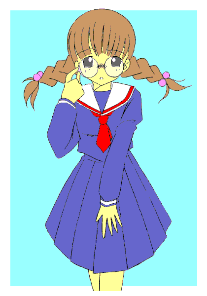
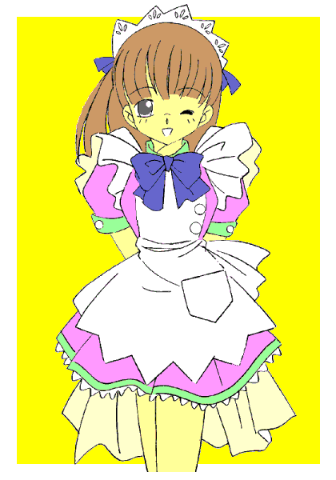

「ほらほら司っ、この美少女、見覚えない？」
「これ…………ひょっとして、『僕』？」
「ぴんぽーんっ。これあんたが六つのころね。あんまり可愛いからあたしの着ていたお古を着せてみたけど、まるで本当の女の子みたいだったわ。……見て見て。こっちなんか小学校の入学前に撮ったんだけど、文字通りランドセルにしょわれてるわね」
けらけらと姉ちゃんは楽しそう（そして無責任）に笑う。そう言えば小さい頃、よく着せ替え人形にされたっけ――
はじめまして、みなさん。僕の名前は二村司（ふたむらつかさ）。高校２年生の男子……のはずです。
着せ替え少年
〜Ｄｒｅｓｓ ＵＰ Ｂｏｙ〜
作：城弾
「えーっ！？ 女装喫茶店！？」
「違う違う。正確にはコスプレ喫茶。で……おまえはウェイトレスのコスプレと言うわけだ」
思わず素っ頓狂な声をあげる僕に、ウチのクラスの文化祭運営委員、高橋直樹がしれっとした口調でそう言い放つ。
ここは僕の通う高校。ちょっと前まで男子校だったので、男女比が結構男よりになっている。
今度の文化祭で僕のクラスは喫茶店をやることになった。ただそれじゃひねりがないので、「コスプレ」が提案された。
正直コスプレは嫌いじゃない。ヒーローものなんか好きだし、真似していると自分が強くなったような気がしてくる。
だからそういうのをちょっと期待して、提案に賛成した。
ところがさっきも言ったとおり、ここは女子の比率が低い。どうしても華やかさにかける――ということで、僕に白羽の矢が立ってしまった。
かなり気にしているけど、僕は身長が１６０をわずかに出るくらいしかない。おまけに細いしとどめに女顔ときている。色も白い。
だから女役が回ってくるのもわからなくはないけど……でも人前で女装だなんて勘弁して欲しい。
（人前じゃなくてもいやだけど……今までだって姉さんが僕に女物着せたがっていたし）
まわりの人からはよく、「はっきりしない」と言われる優柔不断で流されやすい僕だけど、さすがにこれは強い気持ちで反対できそうだった。
「あら、いいじゃない？」
数少ない女子のうちの一人は僕の幼馴染、高城さつき。彼女がお気楽に言い放つ。
ショートカットの身長は僕と同じくらいだから、女子としては高め。活発な女の子。僕はいつもいいように振り回されてきた。
……姉さんよりはマシだったけど。
「さつきちゃん……やめてよ、恥ずかしいよ」
「やってみたら？ つかっちゃんなら可愛いわよ。……それにつかっちゃんがやってくれたら、私だけこんなかっこうしなくて済むもの」
そう言ってさつきちゃんはデザイン画を指差した。
その衣装はやたらと胸元を強調していたり、足が長く見えるようにとスカートが短めだったり。“アン○ミラー○”
より過激かも。
けど、本物の女の子が恥ずかしがる代物を僕に着ろと……？ 「で……でもさ。サイズは問題なくても色々体型も違うし――」
「服だが実は使い捨てだ。面白い試みがあってな、家庭科部が一人一人に合わせて紙で作る。……さすがに大暴れしたら破れるが、普通にお茶を運ぶくらいなら問題ない」
直樹がそう説明する。
「……そう、今回の喫茶店は家庭科部のファッションショーも兼ねているの」
もう一人の高橋――高橋和美がおどけて自分がモデルのようにスカートをひるがえす。
「だからぁ……男の体型に合わせても不気味なだけで……」
僕は何とかしてその役回りから逃れたかった。だから必死で抗弁をしていたというのに――
「話はすべて聞かせてもらったわっ」
担任教師が扉から絶妙のタイミングで入ってきた。再放送で見た『太陽にほえろ』というドラマの、“山さん”
のようだ。
ソバージュにした背中までのロング。大人ではあるけど小さ目のかわいらしい顔立ち。抑えた色のセーターとロングスカート。見た目だけなら結構いい感じの美人なのだが、口を開くとそれが幻想だとわかる。
「幸（みゆき）お姉ちゃん、つかっちゃんが言うこと聞かなくて困ってんの。なんとか言ってやって」
そう。担任教師は僕の姉ちゃんだ。さつきちゃんにとっても幼馴染なので、つい親しすぎる口調になる。
余談だけど『幸せ』を『司る』と言う理由で僕は司と名づけられたらしい。だけどこの名前は女みたいでイヤだ。
「高城さん、学校では『二村先生』と呼びなさい。公私混同はダメよ」
「はぁーい」
一応は教師の自覚があるらしく、もっともらしく言う。でも、みんな姉ちゃんの実態知ったら……
「二村くん。クラスのみんながあなたに頼んでいるのに聞けないかしら？」
「姉ちゃ……先生、いくらなんでも女装なんてイヤです」
「そう、あたしの言うことが聞けないと……
あんた姉ちゃんに逆らうと後が怖いのを承知でそう言ってんのねっ」
「……思いっきり公私混同してるじゃないか」
「そう……いいわよ。ふふふ」
そう言って不気味な笑い声を上げる姉ちゃ……もとい、先生だった。
「ふぅー。まったく姉ちゃんにも参ったよなぁ……」
僕はいま入浴中。体育の授業がきつくて汗まみれの上に泥だらけだったから、家に帰ると風呂に入らずにはいられなかった。
ん……誰か脱衣所にいるみたいけど、母さんかな？
すっかりリラックスしていい気分だった僕は、脱衣所で面食らっていた。
「ワイシャツ……じゃなくてブラウスってやつだ。……こっちは短パン……じゃなくてスカート。……ブラジャーにパンツまで…………って、こんなことするのは――」
僕は腰にバスタオルを巻きつけた状態で、どすどすと二階へ上がった。
二階には僕の部屋がある。だから本当なら、そこでちゃんと男物を着てから行くべきだったと後にしてみれば思う。
でも珍しく僕は怒っていた。この仕打ちはあんまりだ。だからバスタオル姿ということも忘れて、となりの姉ちゃんの部屋へ怒鳴り込んだ。
「姉ちゃん！！ 姉ちゃんだろ、こんなことするのっ！！」
姉ちゃんはなにか書類を書いていたが、そのままいすを回転させてこちらを向くと……残念そうに舌打ちした。
「ちっ、引っかからなかったか。……男物の着替えと勘違いして一度でも女物を着れば抵抗なくなるかと思ったけど」
（こ、この不良教師……っ）
「なに考えてんだよっ。自分の弟が恥かくのが平気なの？ しかもその場にいるんだろ。姉ちゃん」
「いいじゃん、面白いし。……それにね、あたし前から一度あんたにちゃんとした女の子の格好させてみたかったのよね。あんたほんとに男にしておくのはもったいないほど可愛いし、色白だし、まつげ長いし」
う……っ、人が気にしていることを……。友達にはうらやましがられるけど本人にしてみたらコンプレックスなのに……
「だからって、僕をみんなの前で女装させる事はないだろ」
僕もかなり興奮していたと思う。だから自分の今の格好なんか気にしてなかった。
あれっ？ 姉ちゃんの目線がずいぶん下だ。そう言えばなんだか腰が寒い。
「司、あんた……せめて前くらい隠してよね」「え゛……」
下を向くと、バスタオルが足元に落ちていた。
「わ……わわっ！」
バスタオルを拾って隠すなり、自分の部屋に逃げるなりすればよかったのだが、前が丸見えで動転していた僕は……手にしていたものをあわてて履いてしまった。「しまったぁぁぁぁっ！！ これは女のパンツじゃないかぁぁぁっ！！」
姉ちゃんが目を丸くしている。そりゃそうだ……弟が女物のパンツ穿いてりゃね。
あ……あれ？ なんかそう思ったら、とたんに変な気持ちになってきた。怒り方がそんな爆発的じゃなくなって、もっと内側に向かうような――。
それに脚の付け根の違和感。小さい女物だからきつかったし、さっきまで若干の隙間があったのに……それがすっとなくなってしまった。
「司……あんた、やけにそのパンツがフィットしてない？ まるで――」
姉ちゃんは凄い勢いで立ち上がると僕に迫ってきた。
そして、こともあろうに僕の股間に手を滑らせ、撫で回す。「や……やだ、あんた男のモノをどこにやっちゃったのよ！？」
返事どころじゃなかった。撫で回されて変な気分に……今まで感じたことのない気持ち…………いい……
「それにその体……もともと華奢だったけど、まるで『胸が膨らんできたばかりの女の子』みたい。……司、あんたそこまで女っぽかった？」
このまま狼狽していてくれた方がありがたかったが、姉ちゃんはすぐに楽しむ方向に持っていく。僕にとっては
“災難” だ。
「まぁいいわ。せっかく穿いたんだから、ブラもつけてみなさい。つけてから詰めものをしてみるから。そしたら採寸してあげる」
でも僕はさっきの得体の知れない快感にまだ酔っていた。腰が抜けそうだった。
「もう、仕方ないわねぇ。まぁ今まで着けたことあるわけないから、わからないのも当然か。……いいわよ、あたしがつけてあげる」
姉ちゃんは、そのまま背中から僕の胸にブラジャーを合わせる。
ところがだ。なにか一瞬むずがゆくなったと思ったら奇妙に胸が重くなりフィット感を覚えた。
「ちょ――ちょっと？ 今度は錯覚じゃない。いきなり胸が膨らんだわ……」
こうなると姉ちゃんは止められない。もののためしとフリルまみれのワンピースを着せられる。靴下もだ。
暴走は止まらない。運悪く姉ちゃんの部屋だったために何から何までそろっている。化粧され爪も塗られイヤリングまで……
でも、不思議なことに女装が進むたびに、抵抗感がなくなっていく。段々と女物を身につけるのが当たり前に思え、そしてアクセサリーを着ける時点では、僕はそれを完全に楽しんでいた。
「驚いた……似合うとは思っていたけど。ね、鏡見て見なさいよ」
鏡台を指差す。そこには姉ちゃ……お姉ちゃんと一緒にひとりの美少女が映っていた。
「こ……これが、これが……あ、あたし？ …………えへへっ、あたしってば結構可愛いかもっ♪」
僕……ううん、あたし、気持ちまで女の子になっちゃったみたい。
さすがにお医者さんに連れていかれちゃったけど……
とある病院。
あたしはガウン一枚になってＣＴスキャンにかけられていた。
「おいおい。高校時代の付き合いのよしみで優先して調べてみれば……なんか危なそうじゃないか。でも思わず解剖〔ばら〕してみたくなった。そそるなぁ……」
『仮面ライダークウガ』の椿先生みたく、物騒なことを言う先生ね。
本当なら男同士のはずなのに、下着もすべて脱いでガウン一枚になったあたしは、先生の視線が恥ずかしくてたまらなかった。
化粧がなかったら、赤くなったのがモロバレだったかも。
「で……どうなの？」
お姉ちゃんはきつい口調で訊ねる。こっちは『仮面ライダーアギト』の小沢澄子だった。でも、この津垣先生とは相当遠慮のない仲みたいね。
「結論から言うとこの子は完全に女だ。子宮、卵巣があり精巣がない。ついでに言うとあばらも一対足りない。間違いなく女の子だ」
「それはわかったわ。で……どうしてこうなったの？」
「たぶん…………暗示だと思う」
「暗示ぃ！？」
そんなバカな――と思ったのはあたしだけじゃないみたい。お姉ちゃんも素っ頓狂な声をあげる。
「砕けた言いかたをすれば肉体そのものが『催眠術』にかかったと言うか……スポーツでもよくあるだろう、実力以上の力を精神が発揮させることが。その極端な例だな。弟さん……流されやすい性格してないか？」
「ああ！！ なるほど。それなら話は早いわ」
ぽんと手を打つお姉ちゃん。ちょっと……そんなことで納得しないでよね。
「つまり女物を身に着けたことで、体が対応しちゃったのね」
「そのあと何から何まで完璧に着せただろう？ 精神まで完全に女の子になっているはずだ。そして一度なってしまえば、何かひとつだけでも女のアイテムがあれば変身を維持できるようだな。今の場合だと女物の服は着てないから、化粧の匂いかな？ それをはずせば男であることを思い出すんじゃないか？」
「どれ」
お姉ちゃんはなんのつもりか、持っていたクレンジングクリームであたしのメイクを落としにかかる。
両の指のマニキュアを剥がされ、メイクを完全に落とされたら段々と思い出してきた。そうだよ……僕は男じゃないか。
同時に胸の膨らみがなくなり、男のモノが復活した。
「おおっ」
診察した津垣先生も驚いている。そりゃそうだ。
「話はわかったわ。つまり服装次第で男にも女にもなれるわけね」
姉ちゃんの瞳が危ない光をたたえたように見えたのは、僕の気のせい……ではなかった。
家に帰ると姉ちゃんはアルバムを取り出してきた。例の子供のころの女装写真だ。
「ひょっとしたらアンタ……このとき本当に女の子になっていたのかもね。小さいから理解できなかっただけで、昔からそういう体質だったのかもね」
直さなくっちゃ。この流されやすい性格直さなくっちゃ。さもないと女の子の気持ちになっている時に、男に恋しちゃうかも。そうしたらもう……
「…………」
さすがにそれは飛躍し過ぎ。でも、こんな体質がばれたら学校で何をされるか――
翌日。僕は普通どおりに登校した。
考えてみれば普通、男は自分の意思でもなければ女物など着ない。だからコスプレさえ乗り切ればばれずに済むはず。
だけど甘かった。秘密を知る人間が、この学校に勤務しているのだ……
放課後。僕は文化祭の話し合いから逃げることにした。
自分で知っている流されやすい性格……話し合いは不利……逃げるに限る。だけど、
「司！！ どこに行く気だよ」
「ちょっと用事が……」
「待ちなさいよ。今日はサイズ測る日じゃない」
本人の意思を置いてきぼりにして、勝手に採寸の予定まで立てないで欲しい。
無視して逃げ出す。採寸できなきゃコスチュームも作れない。しかし僕の目の前に、担任である姉ちゃんが立ちはだかった。
「こぉぉぉぉぉぉぉぉぉぉっ！！」
あ、なんかイヤな呼吸の仕方しているし……と、呆然としたのが悪かった。
「桜色の口紅疾走（ピンッキッシュルージュ・オーバードライブ）っ！！」
どこに隠し持っていたのか、両手にスティックタイプの口紅を持ち、素早く僕の顔の前で交差させる。
うそ……あんな大雑把な動作で、僕の唇に口紅の感触が。……か…………神業っ。
「……！！」
ま……まずい。「口紅を塗られた」ことを認識したのはまずい。
僕は自分が男であると意識しようとした……でもダメだった。肩幅が狭まり、その分余った肉で胸が膨らみ、どういう原理かお尻も大きくなった感触が――
学生服の下でのことだから、みんなにはわからないらしい。それならまだばれてない…逃げなくちゃ、逃げなくちゃ――
「はぁーい。みんな集合。これからこの子の体質について説明するからね」
姉さんがみんなの前に僕を連れていった。ご丁寧に昨日のいきさつを全部ばらす。そして学生服の前をはだけさせた。
「「おおっ！！」」
みんな驚く。そりゃそうだろう。
昼休みは詰襟脱いでバレーボールに興じていたのだ。そのときは平らな胸……それが今は小さめでも膨らんでいるのだ。ワイシャツを押し上げるほどに。
「……と言うわけなの。それじゃ男子は外に出てね。女子はこれからこの子の採寸するわよ」
「はぁーい」
それから僕は、女子のみんなにオモチャにされた。
裸に剥かれて、現れた僕の『少女』の肢体を見て、みんな驚く。
ブラジャーに合わせて胸が膨らんでいくのを見て、さらに驚く。
さすがにショーツは隠しながら履き替えたけど、脚の付け根の盛り上がりが完全になくなり、女の子のそれになっていたのには誰もが驚いていた。
姉ちゃんが面白がって化粧を完全なものにする。そのたびに体が女性化するのが実感できる……
こうして僕の体質は、みんなの知るところとなった。
「それじゃコスチューム製作、よろしくね」
「はぁい。二村さんの可愛さを最大限に引き出すデザインに変更します」
みんながノリノリなのに対して、さつきちゃんの困惑した表情が印象的であった。
家で僕は決意した。文化祭の日は絶対エスケープしてやるっ。
そして当日。
朝、僕は四時にセットした目覚ましで目覚めた……あれ？ 朝日？ 秋なのに四時に朝日？ ……うわっ、六時になってるっ！！
セットを間違えたんだ。……とにかく急ごう。
何か顔が変だな……でもそんなの後回し。今すぐ逃げないと姉ちゃんに学校に連行されて、変身した姿でウェイトレスをすることになる。
それだけは避けたい。
ドアは最初から止めて、窓からの脱出を試みる。……大丈夫。以前に試したときは上手くいった。
こんな性格だけど、僕は運動神経が鈍いわけじゃない。意外と体育祭では活躍しているし。
視界の隅に何かが光った。鏡？ ま……まさかっ！？ ここまでやるとはっ！！
鏡に映ったのは、化粧されていた僕の顔だった。びっくりして完全に目が醒めた。
匂わないタイプの化粧品らしいが、化粧している――と認識してしまうと同時に変身が始まる。
「ふっふっふ、あんたの行動を読まないわけないでしょ。あんたが眠ってから夜中に化粧しておいたのよ。ぐっすり眠っていたから楽だったわ」
姉ちゃんが部屋の中に入ってきて、勝ち誇ったようにそう言った。
「はぁい、今日はこれ着て学校に行きましょうね〜。はじめから女の子なら違和感ないわよ〜」
僕は女の子の下着をつけさせられ（どうやら採寸したデータでちゃんと合うものをそろえたらしい）、セーラー服を着せられた。
僕の意識が……段々『あたし』に置き換わっていく。
「似合うじゃない。このあたしが女子高時代に着ていた制服だけど、ウチの女子の制服とたいして変わらないデザインだし。さてと……念のため」
あたしは度の入ってないメガネを掛けさせられ、かつらを被せられた。お姉ちゃんはその長い髪を器用に三つ編みにしていく……
「はいっ、おとなしい文学少女いっちょ上がり〜っ」
そう。鏡の中のあたしは、いかにも図書室の常連といった感じの女の子になっていた。
こうなっちゃうと、もうお姉ちゃんのなすがまま。……おとなしいあたしは押しの強いお姉ちゃんには逆らえないの。
お父さんとお母さんはあたしの姿にびっくりしていたけど、文化祭の女装の一環と説明されてとりあえず納得したみたいだ。
朝食を済ませ、あたしはお姉ちゃんと一緒に登校した。
「えーっ？ この娘が二村ぁ！？」
セーラー服姿で登校したあたしは、みんなの好奇の視線に晒された。
「は……恥ずかしいからジロジロ見ないでください……」
口もとに手を当てて消え入りそうな声でそう言うと、男子の何人かはもだえ始めた。
「いい！！ まさかクラスメート――それも男にこんな萌え要素満点の奴がいたとは……
この古谷の目をもってしても見ぬけなかったわっ！！」
「二村、後でそのまま付き合わないか？」
「ちょっと嶋田君、『不純同性交遊』はダメよ！」
「はいはい、続きはあとで。……それじゃ高橋さん、柏原さん、この娘に衣装を着せてあげて」
お姉ちゃんに言われて、あたしは更衣室へと『連行』されていった。
「こ……こんな恥ずかしいのを着るんですか？」
更衣室。あたしは紙のコスチュームを見て絶句してしまった。
和紙でできたそれは意外に丈夫なのだそうだ。
肩が大きく膨らんだトップス。腰のあたりがきついけど、コルセットをはめられたら体の方がそれに合わせてしまった。
上はまだ妥協できるけど、問題は下である。破れなくてもちょっと動けば下着が見えそうなミニスカート。ふわっと裾が広がってて、色もピンクとライムグリーンでアイドルの衣装みたい。
こんな派手なの、とてもじゃないけど恥ずかしくて着られないよ……
「大丈夫よ。テニスウェアやチアガールといっしょ。ちゃんとアンダースコートをはくから」
そういう問題なの？ ……だけど沈黙を同意と取られたらしく、あたしはメガネを外され、セーラー服を脱がされてしまった。
三つ編みをほどかれて、ポニーテールに直される。
コスチュームの背中の部分から足を入れて、上に引っ張りあげてもらう。
きちんと整えてから、本当の服ならファスナーがあるところにある『のりしろ』に糊をつけてあわせる。
脱ぐには破けばいいが、それゆえ一度脱いだら二度と着れない。まさに使い捨てだった。
いっそ破いてしまえば……そう思っていたのは、『文学少女』の思考が残っていたところまで。
「……あ」
鏡で全身を見せられ、あたしの気持ちはあっという間に『ウェイトレス』へと変貌した。
へーっ、いいんじゃないの？ このデザイン。……動きやすいし、意外と似合ってるかも♪
ああ忙しい忙しい。なんでこのクラスだけこんなにお客が来るのかしら。
「いらっしゃいませー。ご注文よろしいですかぁ」
スマイルを浮かべてあたしはお客さんに愛想をふりまく。ウェイトレスたるもの、お客さんの前ではいつも笑顔よね♪
「あ……ああ、こ、コーヒーを――」「かしこまりましたぁ。ブレンドひとつぅ」
あたしは本当の女の子でも出ないような甲高い声でオーダーを伝える。
ちなみに教室では火が使えないので、提供のあったコーヒーメーカーでお客さまにお出ししている。
……あ、テーブルがひとつ空いたわ。次のお客さまをご案内する前に掃除しなくちゃ。
あたしはダスターでテーブルの上を拭いていく。その際に思いきり腰をかがめ、スカートの中身が見えそうになっていた。
「ちょ……ちょっとつかっちゃん、パンツ見えてるよ」
真っ赤な顔でさつきちゃんがそう耳打ちする。
「別にいいわよ。アンスコだし見られたって平気……健康的なお色気ってやつよ。これもサービスのひとつ」
「サービスって……そこまでしなくても――」
でもウェイトレスって “サービス業”
なんですもの。できることはなんでもやらないと、ね♪
だけどさつきちゃんは、なんだか不満顔だった。
コスチュームと状況のせいで、あたしはすっかりウェイトレスとして働いていた。
男性客におつりをお返しするときは相手の手を握って。お席へのご案内は腕を取って。
ちょっと接触が多いけど、ウェイトレスってこう言うものでしょ？
文化祭ではウチのクラスの喫茶店が大好評だった。あたしがＭＶＰだとみんなが言う。……そうかしら？ 当然の仕事をしただけよ。
なんかすごいことしちゃったな……あんな衣装で大胆なことができるなんて…………でも、やっぱり図書館で詩集を読んでいる方がいいな……
家に帰ると、あたしは洗面台でお姉ちゃんに言われたとおり化粧を落した。ナチュラルメイクって言っても、やっぱり色々塗っているのね。
セーラー服を脱いで、ブラジャーをはずしショーツを下ろしてお風呂へ……あれっ？ そうだ――
あたし……イヤ、僕は『裸の自分』になったことで本来の姿に戻った。
「ああああっ！ また服に着られてしまったあああああっ！！」
そして猛烈な自己嫌悪。
ひどく落ち込んだが、次の日はクラスのみんなで集まる約束があった。
いつのまに撮られていたのか、僕の文学少女バージョンとウェイトレスバージョンのスナップ写真を何枚か見せられた。
しかも学校のホームページに載せるなんて……
「やめてくれよ……」
僕はさすがに抗議の声を上げた。だが直樹はへらへらと、「大丈夫だよ。名前は載せないから」などと言う。
「謎の女子生徒ってわけ？ それだったら…………まぁ、いいけど――」
本当はよくないが、例によって流されやすい性格がその台詞を言わせた。


代休も終わり、いつもの学校生活がまた始まる。
さつきちゃんといっしょに登校。もちろん僕は男の体で詰襟姿だ。
「ひどい目にあったよ。二度と女にはならないぞ」
「さすがに怒ってるのね。でもよく似合っていたわよ。考えて見ればうらやましい体質かも」
「僕の身にもなってよ。でもまあとにかく女装することなんて、あったとしても次の文化祭だろ。それまでにこの体質を直せば――」
自分でも淡い期待だと思うけど、本気だった。
しかし……
二階の教室に行くと出入り口が騒がしい。女子の姿が多いけど……と思っていたら、みんな僕の姿を見つけて、どやどやと詰め寄ってきた。
「あ？ 二村くん」
「二村さん、あなた女の子になっても運動神経は悪くないでしょ。……お願い、今度のバレーボールの試合に代役で出て」
「え？」
「いいえ、あなたにはウチの演劇部にきていただくわ。何しろ今度のテーマは、『男の心を持つ少女』の話なんですものっ」
「二村くん、裸婦像を描く為にモデルになってくれないか？ 何しろ美術部は予算不足でモデルなんて雇えないし……本当の裸じゃないんだから、別にいいだろう？」
知れまくってる……学校中に僕の体質が知れわたりまくっている…………誰だよ？ 言いふらしているのはっ！？
「はいはーい、変身美少女二村司のクラスは２−Ｂよ〜っ。頼みたいことはこっちにね〜」
やっぱり…… 「何やってんだよ！？ 姉ちゃんっ！！」
案の定、うわさを広めているのは姉ちゃんだった。
「イヤなら断ればいいじゃない。ちょうどいい機会よ。あんたのその流されやすい性格を直すには」
う……。正論のような暴論のような……
「鍛えなさい。そうすればその体質も直せるはずよ」
もっともらしいことを言う姉ちゃんだが、内心は面白がっている気がする。
「でもつかっちゃん……確かにその体質は直した方がいいよ」
さつきちゃんもそう言ってくる。よおしっ、片っ端から断って見せるぞっ。
……………………
結局……女子バレーボールと演劇部の助っ人が決まってしまった。二つに落ち着かせるのが僕の精一杯だった。
僕の平穏な生活は、卒業まで取り戻せそうにない。
あとがき
さて。元ネタとして、竹本泉先生の『しましま曜日』があります。
こちらの主人公は女の子で、やはり服に「着られる」。今回の作品はそれのＴＳ版という訳です。
当初は別な話で進んでました。
女装して鏡の前に立ち、キーワードを言うと鏡の向こうへと。
そこでは本当の女になっているし、社会的にも女性として認知されている。
それで二重生活を送る……といったつもりでしたが、女装とキーワードを考えたら、文化祭で女装を余儀なくされ、「我ながら見事に変身したなぁ」と言ったら「変身」という言葉がキーワードになって……と、どう見ても『龍騎』そのまんま（笑）
軌道修正して今の形になりました。
あ……女の子になっちゃった奴がライダーとなって「男に戻る」望みをかなえようとするのも面白いかな（笑）
ちなみに両性ということで「二村」と言う名前を思いつき、そこからクラスメートは日本ハムファイターズの選手から取りました。
きっと校長は大沢さんでしょう（笑）。僕自身は巨人ファンですけど。
司と言う名前は男女どちらでもいけることから。三人称なら男が漢字で司。女がひらがなでつかさだったでしょう。
一応イメージ的には文化祭で１１月ですが、好評で続編をということになったら５月くらいということにして、水着や体育祭なんかもやってみるのもいいかなぁと思ってます。
服の数だけネタがありそう。
あと衣装に着られるので年齢も変わります。ＯＬ風にされたら２０代女性のようになるし、おばさんっぽくしたらそれらしく。
赤いランドセルしょわせたら、小学生の高学年くらい（もちろん限界はありますが）。
−イメージＣＶ−
司（男）…保志総一郎さん つかさ（女）…矢島晶子さん
さつき…雪野五月さん 幸…平松晶子さん（もろゆかり先生ですね）
みなさんだといかがでしょう？
では、お読みいただきありがとうございました。
□ 感想はこちらに □